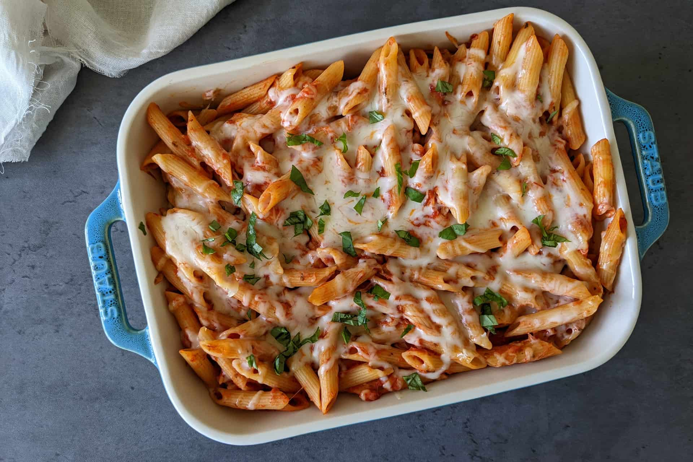

Pasta ji
>
Home

Description
Baked pasta is a warm, comforting dish made by combining cooked pasta with rich sauces, cheese, and often vegetables or meat.
The ingredients meld together, creating a hearty and flavorful base that’s perfect for any meal.
Once assembled, the dish is baked until the cheese melts and forms a golden, bubbly crust on top.
Every bite delivers a mix of creamy, cheesy goodness with the tender pasta beneath, making it a favorite for family dinners and cozy nights in.
Ingrediants
- 200g pasta (penne or fusilli)
- 1 cup tomato sauce
- 1/2 cup cream or milk
- 1 cup shredded mozzarella cheese
- 1/2 cup grated Parmesan cheese
- 1 small onion, chopped
- 1 bell pepper, chopped
- 2 cloves garlic, minced
- 1 tsp olive oil
- 1 tsp dried oregano
- Salt & pepper to taste
- Optional: cooked chicken or veggies
Steps
- Cook the pasta: Boil in salted water until al dente. Drain and set aside.
- >Prepare the sauce: Heat olive oil in a pan. Sauté onion, garlic, and bell pepper until soft . Add tomato sauce, cream, oregano, salt, and pepper. Simmer for 5–7 minutes
- Combine: Mix the cooked pasta with the sauce and optional chicken or vegetables.
- Assemble: Pour into a baking dish and top with mozzarella and Parmesan cheese.
- Bake: Preheat oven to 180°C (350°F) and bake for 20–25 minutes until the cheese is golden and bubbly.
- Serve: Garnish with fresh herbs if desired and enjoy hot.